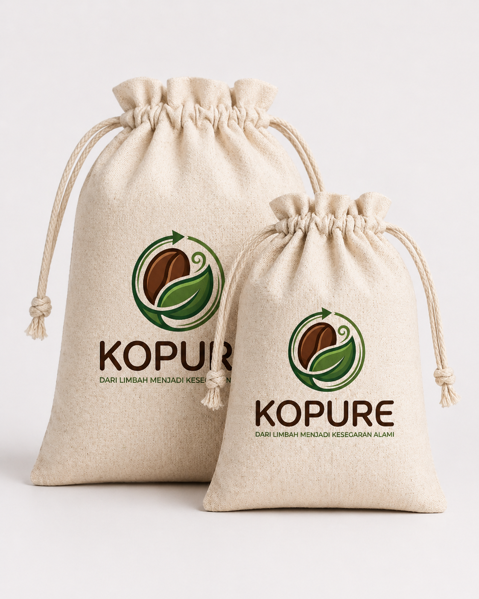
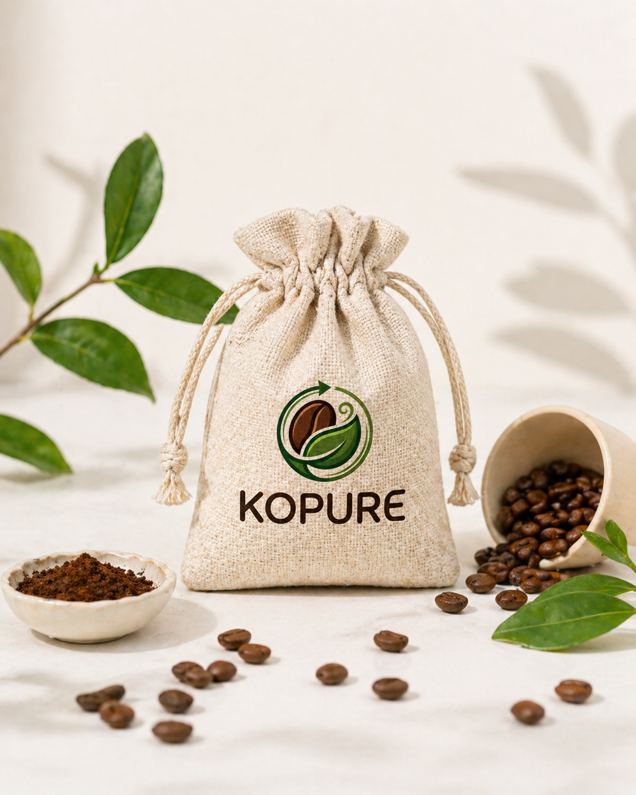
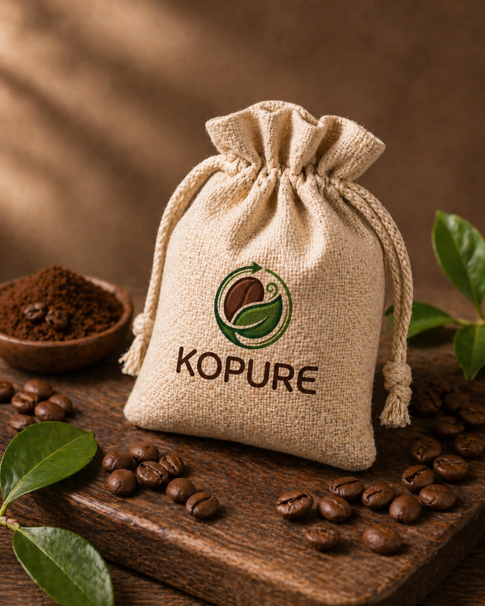
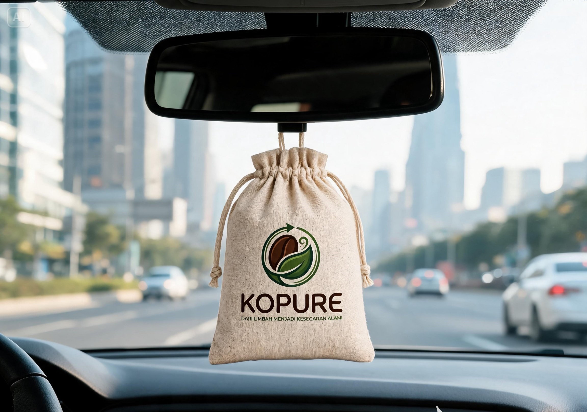
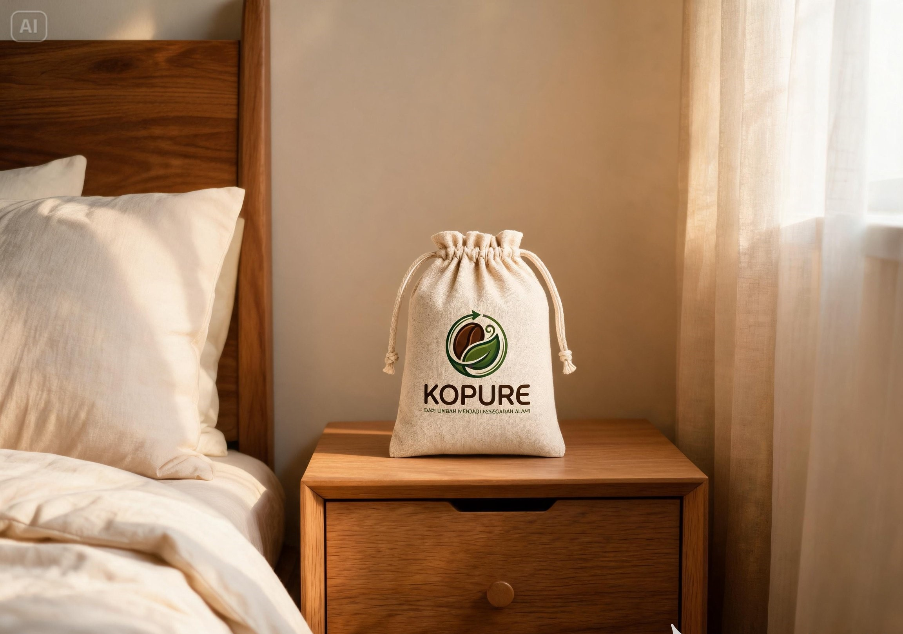
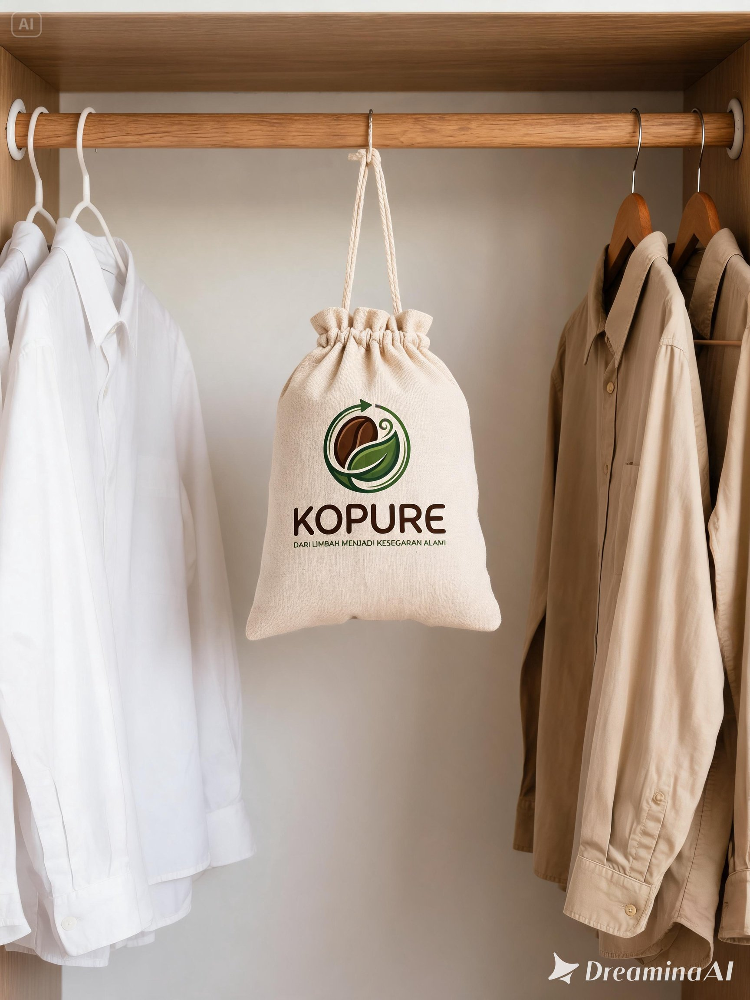
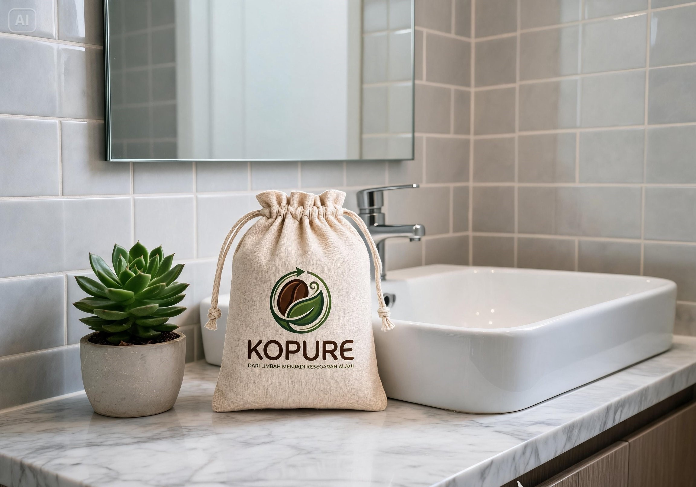
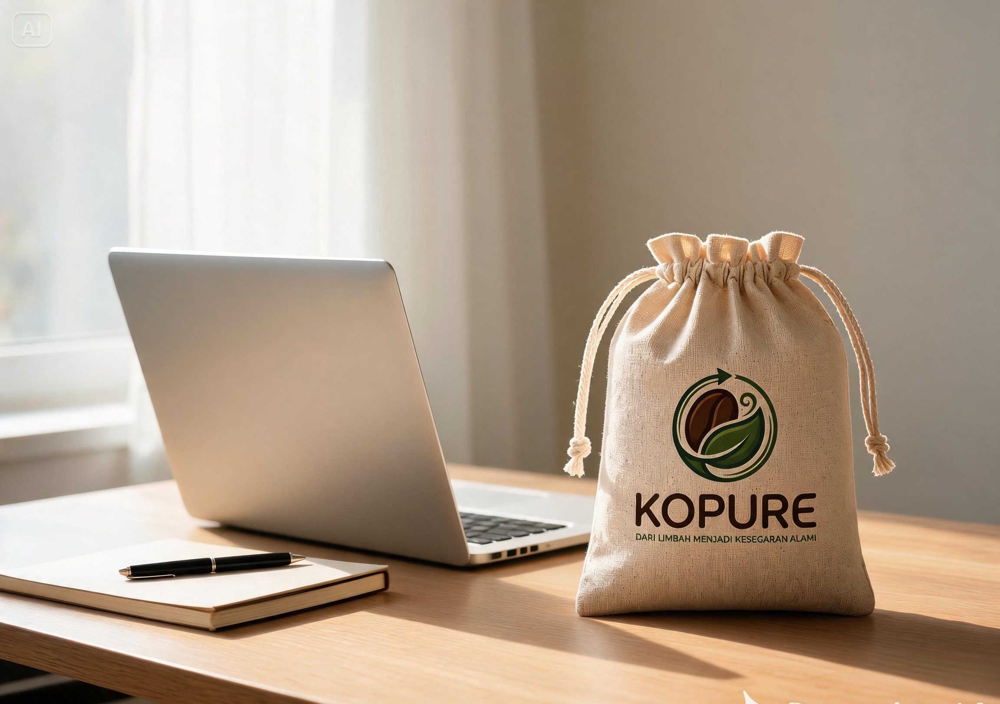
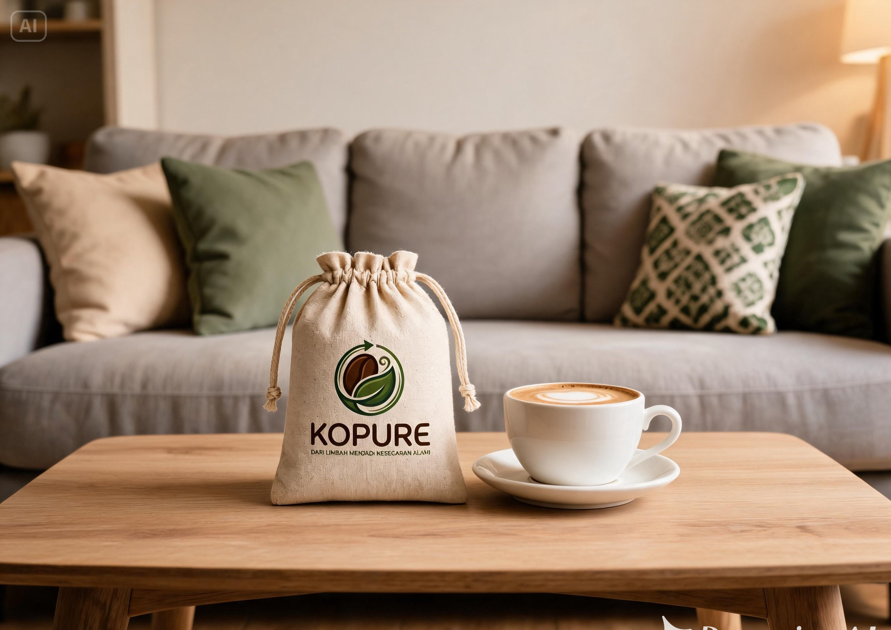
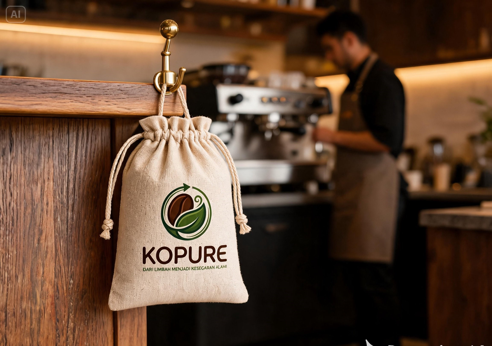

Eco Coffee Deodorizer
KOPURE, Solusi Alami untuk Ruang Lebih Segar
Dari Limbah Menjadi Kesegaran Alami
KOPURE adalah eco coffee deodorizer berbahan ampas kopi yang membantu menyerap bau tidak sedap sekaligus menghadirkan aroma kopi alami yang lembut dan menenangkan.
Natural
Safe
Sustainable
2 in 1Deodorizer & Freshener
Waste BasedBerbahan ampas kopi
Eco FriendlyRamah lingkungan
From Coffee Waste to Natural Freshness
Tentang KOPURE
KOPURE hadir dari kepedulian terhadap limbah ampas kopi yang masih dapat diolah menjadi produk bernilai guna.
Dari limbah kopi menjadi solusi kesegaran alami
KOPURE adalah produk pengharum dan penyerap bau alami yang memanfaatkan limbah ampas kopi sebagai bahan utama. Berawal dari kepedulian terhadap limbah coffee shop, KOPURE mengubah ampas kopi menjadi produk ramah lingkungan yang praktis, estetik, dan bermanfaat untuk kehidupan sehari-hari.
Produk ini dirancang untuk ruang kecil seperti mobil, kamar, lemari, kamar mandi, ruang kerja, ruang tamu, dan coffee shop.

Berbahan Ampas Kopi
Menggunakan limbah kopi sebagai bahan utama produk.
Ramah Lingkungan
Mendukung pengurangan limbah organik dan gaya hidup berkelanjutan.
Aroma Kopi Alami
Memberikan wangi kopi lembut yang nyaman untuk ruang kecil.
KOPURE Team
Tim di Balik KOPURE
KOPURE dikembangkan oleh tim mahasiswa Teknik Informatika yang memiliki peran dalam pengelolaan usaha, produksi, quality control, branding, dan pemasaran produk ramah lingkungan.
Rayhan Wahyu
Ketua Tim / Business Coordinator
Teknik Informatika
Bertanggung jawab dalam koordinasi usaha, perencanaan bisnis, pengembangan kerja sama, dan pengawasan kegiatan KOPURE secara keseluruhan.
Renza Alvianino
Production & Quality Control
Teknik Informatika
Bertanggung jawab dalam proses produksi, pengolahan ampas kopi, pengeringan, karbonisasi, pencampuran bahan, dan quality control produk.

Vhemas Dwi Agung
Branding & Marketing
Teknik Informatika
Bertanggung jawab dalam pengembangan identitas brand, pengelolaan media sosial, promosi produk, dan strategi pemasaran KOPURE.
Problem & Solution
Kenapa KOPURE Dibuat?
KOPURE hadir dari kepedulian terhadap limbah ampas kopi dan kebutuhan produk penyerap bau yang lebih alami.
Limbah Kopi Meningkat
Banyak ampas kopi dari aktivitas coffee shop belum dimanfaatkan secara optimal dan sering berakhir sebagai sampah organik.
Bau Tidak Sedap di Ruang Kecil
Mobil, lemari, kamar, dan ruang tertutup sering membutuhkan penyerap bau yang praktis, aman, dan nyaman digunakan.
Butuh Produk Ramah Lingkungan
KOPURE hadir sebagai solusi alami yang menggabungkan fungsi penyerap bau, aroma kopi, dan konsep keberlanjutan.

Produk Kami
KOPURE Eco Coffee Deodorizer
2 in 1 Deodorizer & Air FreshenerKOPURE Eco Coffee Deodorizer adalah pouch deodorizer berbahan ampas kopi olahan yang dirancang untuk membantu menyerap bau tidak sedap dan memberikan aroma kopi alami. Produk ini praktis digunakan di mobil, kamar, lemari, kamar mandi, ruang kerja, hingga coffee shop.
BentukPouch / Sachet
Bahan UtamaAmpas kopi olahan
AromaKopi alami
FungsiPenyerap bau + pengharum
KonsepEco-friendly, natural, sustainable
Cara PakaiLetakkan atau gantung di area yang diinginkan
Benefits
Kenapa Memilih KOPURE?
KOPURE bukan sekadar pengharum ruangan, tetapi solusi alami yang mengubah limbah kopi menjadi produk bermanfaat.
Menyerap Bau Tidak Sedap
Membantu mengurangi aroma tidak nyaman pada ruang kecil dan tertutup.
Aroma Kopi Alami
Memberikan wangi kopi yang lembut, hangat, dan menenangkan.
Bahan Alami dan Aman
Menggunakan konsep bahan alami untuk kebutuhan pengharum sehari-hari.
Ramah Lingkungan
Memanfaatkan limbah ampas kopi agar memiliki nilai guna baru.
Praktis Digunakan
Cukup diletakkan atau digantung di mobil, lemari, kamar, atau ruang kerja.
Mendukung Zero Waste
Mendorong gaya hidup berkelanjutan dengan mengurangi limbah organik.
Use Case
Cocok Digunakan di Berbagai Ruang
Satu pouch KOPURE dapat menjadi solusi kecil untuk menciptakan ruang yang lebih segar dan nyaman.

Cocok Untuk
Mobil
Menjaga kabin mobil tetap segar dengan aroma kopi alami.

Cocok Untuk
Kamar Tidur
Membantu menciptakan suasana kamar yang lebih nyaman dan menenangkan.

Cocok Untuk
Lemari Pakaian
Membantu mengurangi aroma lembap pada area penyimpanan pakaian.

Cocok Untuk
Kamar Mandi
Memberikan kesegaran alami untuk ruang kecil yang mudah berbau.

Cocok Untuk
Ruang Kerja
Mendukung ruang kerja yang lebih segar, nyaman, dan fokus.

Cocok Untuk
Ruang Tamu
Membantu menghadirkan kesan hangat dan alami untuk tamu.

Cocok Untuk
Coffee Shop
Cocok sebagai pengharum ruangan atau merchandise bertema kopi.
Kecil tapi besar manfaatnya.
Process
Dari Ampas Kopi Menjadi Produk Siap Pakai
KOPURE melalui proses pengolahan sederhana untuk mengubah ampas kopi menjadi deodorizer alami yang praktis digunakan.
Ampas Kopi Dikumpulkan
Ampas kopi diperoleh dari aktivitas coffee shop sebagai bahan baku utama.
Dikeringkan
Ampas kopi dikeringkan agar lebih stabil dan tidak mudah berjamur.
Dikarbonisasi & Diaktivasi
Ampas kopi diproses untuk meningkatkan kemampuan menyerap bau.
Dicampur Bahan Alami
Bahan pendukung dan aroma kopi ditambahkan untuk memperkuat fungsi produk.
Dikemas dalam Pouch
Produk dikemas dalam pouch estetik yang praktis digunakan.
Siap Digunakan
KOPURE siap diletakkan atau digantung di ruang yang diinginkan.
Promo & Campaign
Pilih yang Alami, Pilih yang Bermakna
KOPURE hadir sebagai solusi kecil untuk hidup yang lebih segar dan bumi yang lebih baik.


Brand Identity
Identitas Warna KOPURE
Warna KOPURE terinspirasi dari alam, kopi, daun, kertas daur ulang, dan kain pouch natural.
Forest Green
#313C19
Keberlanjutan, alam, dan komitmen lingkungan.Deep Leaf Green
#2A502F
Kesegaran, daun, dan karakter eco-friendly.Natural Leaf Green
#6E8C4D
Aksen natural dan pertumbuhan.Coffee Brown
#422315
Kopi, kehangatan, dan bahan utama produk.Roasted Brown
#664130
Karakter roasted coffee dan kesan handmade.Cream Paper
#F5EEE1
Kertas daur ulang, kelembutan, dan natural packaging.Burlap Beige
#D2BC9A
Kesan pouch kain, natural packaging, dan produk handmade.Contact
Mulai dari Langkah Kecil untuk Bumi yang Lebih Baik
Gunakan KOPURE untuk ruang yang lebih segar, alami, dan bermakna.